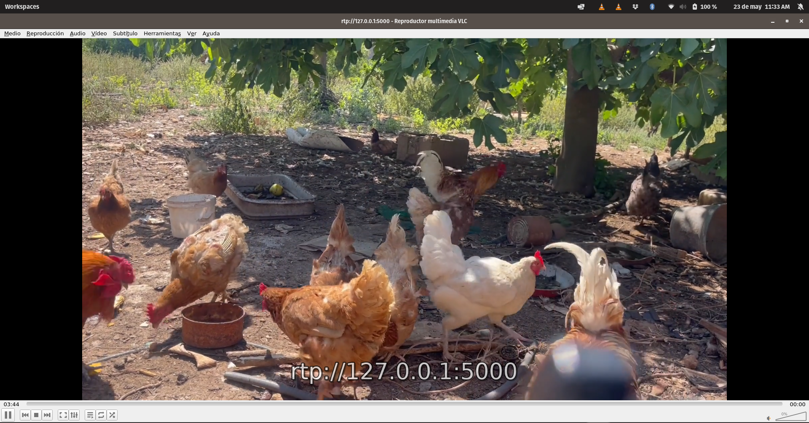

Tarea 1.1: Clip de vídeo incrustado en HTML 5
Elige un clip de vídeo de máximo 20 segundos (puedes crearlo con tu dispositivo móvil, que tenga objetos en detalle y en movimiento) y codifícalo con Avidemux eligiendo el formato y resolución que creas adecuadas para su publicación en web. Teniendo en cuenta que no todos los navegadores aceptan todos los códecs, codifica el vídeo en los formatos necesarios por tal qué sea compatible con el máximo de navegadores posible. Explica las decisiones tomadas en la codificación y el porqué de cada una. Confirma con la herramienta MediaInfo que lo ha codificado a la velocidad que querías.
Incrustando el vídeo codificado en el HTML
He grabado un vídeo de 20 segundos, tal como se requiere en el enunciado. El vídeo comienza con elementos estáticos y luego incorpora movimiento.
A continuación, se detallan los datos del vídeo original:
- Formato: MPEG-4
- Formato del perfil: QuickTime
- Tamaño de archivo: 58,0 MiB
- Duración: 21 s 78 ms
- Velocidad de fotogramas: 59,940 FPS
- Librería de codificación: Apple QuickTime
En la pestaña VÍDEO destacan los siguientes datos:
Para asegurar la máxima compatibilidad y reproducción en la mayoría de los navegadores actuales, se seleccionará el formato MP4 como contenedor y los códecs H.264 y AAC. Se emplearán resoluciones habituales:
- 4K: 3840 x 2160
- 2K: 2560 x 1440
- Full HD: 1920 x 1080
- HD: 1280 x 720
- 480p: 854 x 480
- 360p: 640 x 360
- 240p: 426 x 240
Se eligió la resolución Full HD por su amplia compatibilidad. Se descartaron resoluciones superiores (4K, 2K) por su tamaño y requisitos técnicos.
El vídeo original, grabado con un móvil y que ya cumplía con los requisitos técnicos (contenedor, códecs y resolución), fue recodificado con Avidemux utilizando los mismos parámetros.
Además del formato principal Full HD, se proporcionarán versiones alternativas de los vídeos mediante la etiqueta <video> de HTML5.
Los archivos de vídeo resultantes tienen los siguientes tamaños:
- mfernandez_original.mov: 57.5 MB
- mfernandez_fullhd.mp4 (formato principal): 21.158 Kb
- mfernandez_hd.mp4: 9.062 Kb
- mfernandez_480.mp4: 4.434 Kb
- fmartinez59_vp9.webm: 32.253 Kb
Tarea 1.2: Web con vídeo HTML5
Crea la web. Genera un fichero .html mediante un editor de texto, incrústale el clip de vídeo codificado utilizando el tag 'video' de HTML5 y prepara la web porque pueda ser visualizada desde la mayor parte de los navegadores. ¿Qué caracteriza el formato HTML5 en publicación y visualización de un vídeo respecto de otros métodos de publicación?
Vídeo en formato WebM (VP9)
Este formato utiliza el códec VP9, que ofrece una excelente compresión manteniendo una buena calidad visual. Es compatible con la mayoría de navegadores modernos como Chrome, Firefox y Edge.
Vídeo en formato MOV (Full HD)
Este formato utiliza el códec H.264, ampliamente compatible con dispositivos Apple y ofrece una calidad Full HD (1920x1080). Es ideal para visualización en pantallas grandes.
Vídeo en formato MOV (HD)
Versión HD (1280x720) del vídeo, optimizada para dispositivos con pantallas de tamaño medio y conexiones de velocidad moderada.
Vídeo en formato MOV (480p)
Versión de menor resolución (480p), ideal para dispositivos móviles o conexiones lentas, manteniendo una calidad aceptable con un tamaño de archivo reducido.
La implementación con múltiples fuentes
A continuación se muestra la implementación que combina todos los formatos disponibles, permitiendo al navegador seleccionar automáticamente la mejor opción según el dispositivo y sus capacidades.
<video controls>
<source src="mfernandez_vp9.webm" type="video/webm">
<source src="mfernandez_original-fullhd.mov" type="video/quicktime">
<source src="mfernandez_original-hd.mov" type="video/quicktime" media="(max-width: 1280px)">
<source src="mfernandez_480.mov" type="video/quicktime" media="(max-width: 480px)">
Tu navegador no soporta la etiqueta de video HTML5.
</video>
Características del formato HTML5 en publicación y visualización de vídeo
El formato HTML5 ha traído numerosas mejoras para la visualización y publicación de material audiovisual, destacando las siguientes:
Compatibilidad nativa con vídeo
Con HTML5 no se requieren reproductores externos para la visualización de vídeo, como ocurría anteriormente con plugins como Flash o Silverlight. La etiqueta <video> permite reproducir contenido multimedia directamente desde el navegador de forma nativa.
Accesibilidad mejorada
HTML5 permite añadir subtítulos, descripciones y metadatos al vídeo mediante la etiqueta <track>, facilitando la accesibilidad para personas con discapacidades auditivas o visuales, y mejorando la experiencia general de todos los usuarios.
Adaptabilidad a diferentes dispositivos
Permite ofrecer distintas versiones de tamaño y calidad para adaptarse a los diferentes dispositivos o según la conexión de red, gracias al atributo media en las etiquetas <source>. Esto logra mayor compatibilidad, menor carga de red y en general una mejor experiencia de visualización.
Soporte para múltiples formatos
HTML5 permite especificar múltiples fuentes de vídeo en diferentes formatos (WebM, MP4, Ogg), permitiendo que el navegador elija automáticamente el formato que mejor soporte, aumentando así la compatibilidad entre diferentes navegadores y dispositivos.
Personalización y control
Ofrece numerosas opciones de control como volumen, reproducción, pausa, pantalla completa, etc., a través del atributo controls. Además, puede personalizarse con CSS y JavaScript para lograr una mayor adaptación a la estética del sitio web.
Integración con otros elementos
Con HTML5 se puede integrar el vídeo con otros elementos del lenguaje como enlaces, imágenes y estilos, permitiendo una experiencia más rica e interactiva para el usuario.
Estandarización abierta
Al ser un estándar abierto desarrollado por una amplia comunidad y con aceptación prácticamente universal, no depende de empresas concretas ni de tecnologías propietarias, lo que garantiza su continuidad y evolución en el tiempo.
Rendimiento optimizado
La reproducción de vídeo en HTML5 generalmente consume menos recursos del sistema que las soluciones basadas en plugins, lo que se traduce en un mejor rendimiento, especialmente en dispositivos móviles con recursos limitados.
Capacidades de streaming adaptativo
Cuando se combina con tecnologías como HLS (HTTP Live Streaming) o DASH, HTML5 permite implementar streaming adaptativo, ajustando dinámicamente la calidad del vídeo según las condiciones de la red.
Tarea 1.3: Publicación web
CDN de GitHub pages
Publica el fichero .html y el vídeo en un servidor web gratuito o al CDN visto en la PEC1 (web estática) para verlo con una dirección http pública y valora la experiencia a nivel de usuario/a (retraso de visualización, calidad, etc.).
Se han creado un fichero HTML sencillo llamado index.html que unifica todas las preguntas de la práctica, cada pregunta de la practica es accesible mediante un menú.
Para la publicación se empleó GitHub Pages de GitHub.
La reproducción del vídeo en formato MP4, códec H.264 y resolución Full HD se probó exitosamente en el navegador Chrome desde su dirección pública. La reproducción fue fluida y de buena calidad, sin observarse retrasos, parones ni cortes, lo que indica que el formato y la resolución son adecuados.
Tarea 1.4: Funcionalidad de vídeo
Añade funcionalidad al vídeo mediante los diferentes atributos que el tag "video" ofrece. ¡Experimenta! Dame la dirección web del vídeo para poderlo visualizar.
Experimentando con el tag video
A continuación, podemos ver un ejemplo de controles con poster, silenciado por defecto y track de subtitulos en español.
Tarea 1.5: Streaming
Crea un streaming de vídeo en directo con VLC y visualízalo con VLC. Captura las pantallas de emisión y recepción y explica el proceso.
Emisión de streaming
Configuración de la emisión de streaming utilizando VLC como servidor. Se puede observar la interfaz de emisión con los controles de reproducción.
Recepción de streaming

Visualización del streaming recibido en otro cliente VLC. Se muestran las estadísticas de recepción y la calidad del vídeo.
Proceso de streaming con VLC
El proceso de streaming con VLC implica configurar un equipo como emisor y otro como receptor. A continuación se detallan los pasos seguidos:
Configuración del emisor:
- Abrir VLC y seleccionar "Medio" > "Emitir"
- Añadir el archivo de vídeo a transmitir
- Configurar el protocolo de emisión (RTP/RTSP)
- Establecer la dirección IP y puerto de destino
- Seleccionar el códec y la tasa de bits adecuados
- Iniciar la emisión
Configuración del receptor:
- Abrir VLC en el equipo receptor
- Seleccionar "Medio" > "Abrir ubicación de red"
- Introducir la URL del streaming (rtp://127.0.0.1:5000)
- Iniciar la reproducción
Durante la emisión, se monitorizaron las estadísticas tanto en el emisor como en el receptor para evaluar la calidad de la transmisión, la tasa de bits, los fotogramas perdidos y otros parámetros relevantes.
Tarea 2.1: Información del vídeo
Genera un clip de vídeo de calidad HD de unos 20 segundos de duración (o descárgalo de la web) que posea movimiento (algo equivalente al clip de fútbol que he usado de ejemplo). Sea cual sea su formato, conviértelo a MP4 con Avidemux con los siguientes valores y lo denominaremos clip01. La codificación de salida será MPEG4 AVC y a VIDEO OUTPUT-CONFIGURACIÓN selecciona como modo de codificación TASA DE BITS MEDIA-DOS PASADAS (para mantener la calidad) y 5000 Kbps. Como formato de audio, MP3 (lame) y como contenedor, MKV. Incluye estos clips en la entrega de la práctica. Confirma con MediaInfo que Avidemux ha realizado el trabajo correctamente.
Configuración de emisión
Primero, el vídeoclip se puede descagar aquí: clip01.mp4
A continuación se muestra la información detallada del vídeo procesado, obtenida con MediaInfo.
Interfaz de MediaInfo confirmando las correctas características del vídeo procesado.
Tarea 2.2: La reproducción del vídeo
Configura una emisión repetitiva y una recepción del clip01 con los mismos valores empleados al clip de fútbol. En el VLC de emisión, menú HERRAMIENTAS-INFORMACIÓN DEL CÓDEC-CÓDEC (Mac: VENTANA-INFORMACIÓN MULTIMEDIA-DETALLES DEL CÓDEC), indica los códecs con los cuales dice que se generó el fichero almacenado. En ESTADÍSTICAS indica la TASA DE BITS DE CONTENIDO que está leyendo de disco, es la necesaria para una reproducción correcta del contenido (es un valor cambiante, de forma que toma un valor mediano aproximado).Resultado de la emisión
La reproducción del vídeo presenta un retraso inicial de 2 a 3 segundos. Una vez iniciado, el vídeo y el audio se mantienen fluidos y sincronizados en un equipo de gama media de 2022.
El vídeo utiliza el códec H264-MPEG-4 AVC parte 10 (avc1) y el audio el MPEG Audio capa ½ (mpga). La tasa de bits del contenido es de 8132 kb/s puede observarse seguidamente.
Siendo la captura de pantalla de la emisión la imagen anterior y las estadísticas de la recepción son las siguientes:
Tarea 2.3: Códecs
Análisis de los códecs utilizados en la transmisión de streaming.
Información de códecs
Información detallada de los códecs utilizados en la transmisión
Códecs utilizados:
- Códec de audio: MPEG Audio layer 1/2 (mpga)
- Canales: Estéreo
- Tasa de muestreo: 44100 Hz
- Bits por muestra: 32
- Tasa de bits (audio): 128 kb/s
- Códec de vídeo: H264 - MPEG-4 AVC (part 10) (h264)
- Resolución de vídeo: 1920x1080
- Dimensiones del buffer: 1920x1088
- Tasa de fotogramas: 29.975120
Análisis de códecs:
La combinación de H.264 para vídeo y MPEG Audio para audio representa una elección óptima para streaming por su equilibrio entre calidad y eficiencia de compresión. H.264 ofrece una excelente calidad de imagen con tasas de bits relativamente bajas, mientras que MPEG Audio proporciona una calidad de sonido adecuada para la mayoría de aplicaciones.
La resolución Full HD (1920x1080) garantiza una buena calidad visual, mientras que la tasa de fotogramas cercana a 30 FPS asegura una reproducción fluida del movimiento.
Estadísticas y tasa de bits
La captura muestra que el contenido está codificado en los formatos especificados.
La tasa de bits del contenido muestra una gran variabilidad, aunque su valor medio se sitúa aproximadamente por encima de los 8000.
Tarea 2.4: Estadísticas de recepción
Análisis de las estadísticas de recepción del streaming de vídeo.
Datos estadísticos de la recepción
Estadísticas de recepción mostrando parámetros de rendimiento
Información de códecs en el lado del receptor
Parámetros destacados en recepción:
- Bloques decodificados (Audio): 3679
- Buffers reproducidos (Audio): 1839
- Buffers perdidos (Audio): 0
- Bloques decodificados (Vídeo): 2652
- Fotogramas mostrados (Vídeo): 1344
- Fotogramas perdidos (Vídeo): 33
- Tamaño de datos demuxados: 37119 KiB
- Tasa de bits del contenido: 8390 kb/s
Comparativa emisor-receptor:
Al comparar las estadísticas de emisión y recepción, se observa que la tasa de bits es ligeramente superior en recepción (8390 kb/s frente a 8152 kb/s en emisión), lo que podría deberse a la sobrecarga del protocolo de transporte.
La pérdida de fotogramas en recepción (33) es significativamente menor que en emisión (269), lo que sugiere que la red local utilizada para la prueba ofrece un rendimiento adecuado para la transmisión de vídeo en alta definición.
Tarea 2.5: Análisis de emisión
Análisis detallado del proceso de emisión y recepción de streaming.
Análisis técnico del streaming
Estadísticas adicionales del proceso de streaming
Más datos estadísticos del proceso de streaming
Análisis del rendimiento:
El análisis de las estadísticas muestra que la transmisión de vídeo en streaming utilizando VLC como servidor y cliente ofrece un rendimiento satisfactorio en una red local. La tasa de bits promedio de aproximadamente 8.3 Mbps es adecuada para transmitir vídeo en Full HD (1920x1080) con una calidad visual aceptable.
La pérdida de fotogramas es relativamente baja (menos del 2.5% en recepción), lo que garantiza una experiencia de visualización fluida sin interrupciones notables. El códec H.264 demuestra ser eficiente para la compresión de vídeo, manteniendo un buen equilibrio entre calidad y ancho de banda.
La latencia observada es mínima, lo que hace que esta configuración sea adecuada para aplicaciones que requieren interactividad en tiempo real, como videoconferencias o transmisiones en vivo.
Recomendaciones:
- Para redes con menor ancho de banda, se recomienda reducir la resolución a 720p o incluso 480p.
- Considerar el uso de códecs más eficientes como H.265/HEVC para mejorar la relación calidad/bitrate.
- Implementar técnicas de streaming adaptativo para ajustar dinámicamente la calidad según las condiciones de la red.
- Para transmisiones a través de Internet, es recomendable utilizar protocolos como HLS o DASH que ofrecen mejor adaptabilidad a condiciones de red variables.
Tarea 2.6: AWS Elemental MediaLive
Enfocándonos en la transmisión en vivo de un stream de vídeo mediante un servicio de cloud CDN, éstos ofrecen múltiples modos de distribución, como por ejemplo streaming de baja latencia por entornos de mínimo retraso, streaming por OTT, etc... ¡incluso interactivo! De las múltiples opciones que puedes encontrar, céntrate en una y describe el proceso (máximo dos-tres páginas). Si en el proceso se aplican políticas específicas de usuarios o recursos, roles de gestión y administración de servicios, indícalo. Y opcionalmente y si el entorno te lo permite, haz un cálculo estimativo de coste por minuto de una transmisión dentro de una misma región de un stream HD en directo por 10.000 usuarios simultáneos.
AWS Elemental MediaLive para la transmisión de vídeo en streaming con CDN en la nube
La detención del reproductor tras pausar se demora de 1 a 2 segundos, influenciada por la latencia de red (tipo, ancho de banda, saturación, distancia, calidad, protocolo RTP), el buffer del VLC en el receptor y la capacidad de procesamiento.
La reanudación experimenta una demora mayor, de 2 a 3 segundos, con cortes y desincronización iniciales que requieren entre 7 y 9 segundos adicionales para una reproducción fluida. Este retraso se atribuye a los factores previamente mencionados, sumados a la necesidad de resincronizar los relojes del emisor y receptor (RTP) y rellenar los buffers. Si bien la latencia de red es mínima al operar en la misma máquina, la latencia inherente al protocolo RTP es perceptible.
AWS Elemental MediaLive es un servicio en la nube para procesar vídeo en vivo de calidad broadcast, permitiendo la entrega a televisiones y dispositivos conectados. Ingresa vídeo en vivo, lo transcodifica en tiempo real a múltiples formatos y tasas para ABR, y lo prepara para una distribución eficiente.
Dentro de AWS Media Services, se integra con MediaConnect (transporte seguro), MediaPackage (paquetización y originación con DRM y time-shifting), MediaStore (almacenamiento optimizado) y CloudFront (CDN). MediaLive Anywhere ofrece despliegue local para flujos híbridos, facilitando la transición de broadcasters a la nube.
Características Clave y Beneficios (CDN)
AWS Elemental MediaLive ofrece producción de vídeo en vivo de alta calidad con códecs estándar (H.264/AVC, H.265/HEVC), funcionalidades broadcast (inserción de anuncios SCTE-35, subtítulos, audio múltiple, corrección de sonoridad), alta disponibilidad (multi-AZ), Statmux para optimizar ancho de banda, escalabilidad dinámica y precios de pago por uso.
Su integración con Amazon CloudFront (CDN) proporciona escalabilidad masiva, baja latencia, alcance global, seguridad mejorada (mitigación DDoS, cifrado, controles de acceso) e integración optimizada para una entrega eficiente y resiliente de streams en vivo a audiencias globales, incluso ante alta demanda o fallos.
Modos de Distribución
AWS Elemental MediaLive genera formatos estándar de la industria (HLS, DASH, MSS, RTMP, RTP/UDP) para streaming ABR, crucial para CDNs. El HLS Output Group, común para dispositivos Apple, usa contenedores M2TS o fMP4 y se envía a S3 (para CloudFront u otra CDN) o directamente a servidores HTTP/CDNs. Genera manifiestos M3U8 y segmentos.
El MediaPackage Output Group envía un único stream HLS a AWS Elemental MediaPackage, que dinámicamente genera múltiples formatos (HLS, DASH, CMAF, MSS) para los clientes. Simplifica la configuración de MediaLive y los endpoints de MediaPackage sirven como origen para CDNs. MediaPackage ofrece funcionalidades avanzadas (DRM, DVR, inserción de anuncios sofisticada). CMAF unifica la entrega HLS y DASH con segmentos fMP4 referenciados por manifiestos M3U8 y MPD, mejorando la eficiencia en almacenamiento y caché de CDN; MediaPackage es clave para generar salidas CMAF, reduciendo la duplicación y los costes.
Proceso de Transmisión en Vivo con MediaLive
AWS Elemental MediaLive procesa transmisiones en vivo desde la ingesta de señal (varios protocolos soportados con seguridad IP para push) hasta la entrega a espectadores mediante una CDN. Los "Inputs" definen la conexión a la fuente, y los "Channels" realizan el procesamiento (codificación redundante opcional). Dentro de un canal, los perfiles de codificación generan múltiples salidas para ABR, y los "Output Groups" empaquetan el contenido (HLS, DASH) y lo envían a destinos (S3, MediaPackage, HTTP).
La arquitectura desacoplada permite flexibilidad en el uso de inputs y canales. Tras la codificación y empaquetado, MediaLive entrega el contenido a la CDN (ej., CloudFront) para su distribución. El ciclo de vida del canal se gestiona vía consola o API, con monitorización en CloudWatch. Este sistema abstrae la infraestructura, facilitando la transmisión global y escalable.
Gestión Acceso y Seguridad (IAM)
La seguridad de AWS Elemental MediaLive se basa en IAM, aplicando el principio de menor privilegio para controlar el acceso a los recursos. Un concepto clave es la Entidad de Confianza (rol IAM como MediaLiveAccessRole) que MediaLive asume para interactuar con otros servicios de AWS (S3, MediaPackage, MediaConnect). La política de confianza del rol permite a MediaLive asumirlo, y la política de permisos define las acciones y recursos permitidos. La correcta configuración es vital para el acceso a fuentes y destinos.
Las políticas y permisos se dividen en permisos para usuarios (gestión de recursos MediaLive) y permisos para el rol de entidad de confianza (acciones de MediaLive en otros servicios, incluyendo iam:PassRole para delegar el rol al crear canales).
En seguridad de red, MediaLive usa Input Security Groups para fuentes "push" y permite ingesta/entrega dentro de VPC. El modelo de entidad de confianza y iam:PassRole reflejan la delegación granular y auditada de permisos, requiriendo permisos explícitos para que MediaLive actúe en nombre del usuario, y para que los usuarios deleguen roles, previniendo la escalada de privilegios.
Estimación Coste Transmisión HD Vivo (10.000 Usuarios)
A continuación, se presenta una estimación de costes para un evento de transmisión en vivo de 1 hora, con calidad HD 1080p, dirigido a 10,000 espectadores simultáneos, utilizando AWS Elemental MediaLive para el procesamiento y Amazon S3 como origen para Amazon CloudFront, que se encarga de la distribución.
Los principales costes de AWS MediaLive son el coste por hora de la entrada HD y de cada salida ABR, el almacenamiento y las solicitudes a Amazon S3 si se usa para las salidas HLS (con CloudFront como origen), y la transferencia de datos saliente y las solicitudes HTTP/HTTPS de Amazon CloudFront, que suele ser el componente de coste más significativo para audiencias masivas.
Basándose en la documentación oficial, que incluye una aplicación de calculadora de soluciones de AWS, se puede construir la siguiente tabla de estimación de costes:
| Componente del Servicio | Función | Coste Estimado por Hora (USD) | Notas |
|---|---|---|---|
| AWS Elemental MediaLive | Entrada HD y Salidas ABR | ~3.11$ | Basado en perfil HD 1080p con 6 rendiciones ABR. Precios de EU West. |
| Amazon S3 | Almacenamiento y Solicitudes (origen HLS) | ~0.07$ | Coste bajo para almacenamiento temporal y solicitudes de S3. |
| Amazon CloudFront | Transferencia de Datos y Solicitudes | ~80.00$ | Basado en 10,000 usuarios, bitrate promedio de 3 Mbps, y precios de transferencia de datos para Europa. |
| Coste Total Estimado por Hora | ~83.18$ | Aproximadamente 1.39$ por minuto | |
Esta estimación muestra que el coste principal (96%) proviene de la distribución CDN, no del procesamiento de vídeo. Para optimizar costes, se recomienda:
- Usar MediaPackage para generar formatos bajo demanda, reduciendo almacenamiento
- Implementar estrategias de caché eficientes en CloudFront
- Considerar compromisos de uso para descuentos en CloudFront
- Optimizar bitrates para equilibrar calidad y costes
- Utilizar MediaLive Anywhere para procesamiento local si es viable
AWS Elemental MediaLive, junto con otros servicios de AWS Media, proporciona una solución completa, escalable y rentable para la transmisión de vídeo en vivo a audiencias globales, con un modelo de costes predecible basado en el uso real.